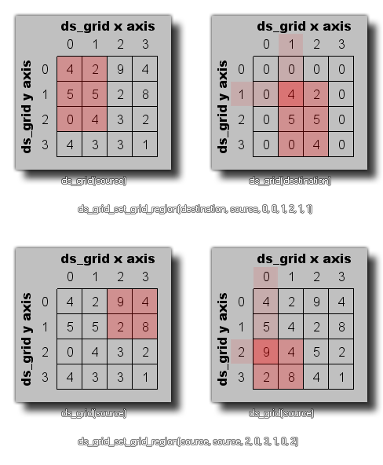

ds_grid_set_grid_region(index, source, x1, y1, x2, y2, xpos, ypos);
| Argumento | Descripción |
|---|---|
| index | El índice de la grilla de destino. |
| source | El índice de la cuadrícula fuente |
| x1 | La posición izquierda de la región de celdas para copiar de la cuadrícula de origen. |
| y1 | La posición superior de la región de celdas para copiar de la cuadrícula de origen. |
| x2 | La posición correcta de la región de celdas para copiar desde la cuadrícula de origen. |
| y2 | La posición inferior de la región de celdas para copiar desde la cuadrícula de origen. |
| xpos | La posición x en la cuadrícula de destino para copiar la región de origen a. |
| ypos | La posición y en la cuadrícula de destino para copiar la región de origen a. |
Devoluciones: N / A
Esta función se puede utilizar para copiar el contenido de un área rectangular de celdas de cuadrícula de una ds_grid (definida previamente) a otra, o se puede usar para copiar una región desde la misma cuadrícula. Las siguientes imágenes ilustran las dos formas en que se puede usar esta función: 
ds_grid_set_grid_region(t_grid, grid, 0, 0, 5, 5, 10, 10);
Esto copiaría la región de celdas de (0,0) a (5,5) de la grilla indexada en la variable "t_grid" y las copiaría a la posición (10,10) en la grilla indexada en la variable "grilla".